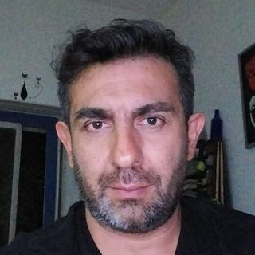

SOBRE Mí

Oscar Di Biase nació en la Ciudad de Buenos Aires, el 24 abril 1973.
Su vida transcurrió en la ciudad Glew, Buenos Aires, Argentina. Desde una temprana edad Osky, como lo reconocían sus allegados, mostró un profundo interés y talento por el arte.
Explorando diversas formas de expresión creativa, comenzando a dar rienda suelta a la misma mediante la música, inspirado en sus ídolos formo parte de bandas musicales del género del rock.
PORTFOLIO